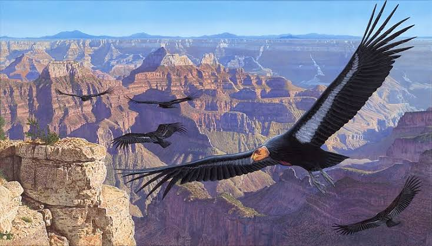
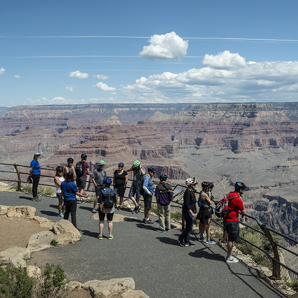

.jpg)
WHAT IS GRAND CANYON NATIONAL PARK?
Grand Canyon National Park, located in northwestern Arizona, encompasses one of the most remarkable and visually breathtaking natural landscapes on Earth. Designated as a U.S. National Park in 1919 and recognized as a UNESCO World Heritage Site in 1979, the Grand Canyon stretches roughly 277 miles (446 kilometers) in length, reaches up to 18 miles (29 kilometers) in width, and plummets to depths exceeding a mile (6,000 feet or 1,800 meters). This colossal geological abyss was sculpted over millions of years by the continuous erosion of the Colorado River, exposing nearly two billion years of Earth's geological history through its intricately layered bands of red, orange, and golden rock.
Beyond its iconic geological formations, the park preserves a vibrant and diverse ecosystem. Because of its dramatic elevation changes—ranging from the arid desert river basin to the forested heights of the North Rim—the Grand Canyon hosts several distinct ecological zones. It provides critical habitat for thousands of plant and animal species, including rare wildlife such as the California condor, desert bighorn sheep, mountain lions, and unique native desert flora.
The region also holds immense cultural and historical significance. For thousands of years, indigenous communities have inhabited and revered the canyon. Today, 11 Native American tribes maintain deep-rooted ancestral connections to the land, regarding the canyon as a sacred cultural birthplace and sanctuary. Archaeological sites, ancient rock art, and historic structures preserved throughout the park offer a glimpse into the long human history woven into this vast landscape.
Receiving millions of visitors every year, Grand Canyon National Park is a global hub for outdoor adventure and environmental education. Whether taking in panoramic views from South Rim overlooks, hiking down challenging inner-canyon trails, rafting the white-water rapids of the Colorado River, or observing the brilliant night skies, visitors encounter an extraordinary natural sanctuary that showcases the immense power of time, water, and geological forces.
EXPLORE THE CANYON
Choose your rim, plan your route, and explore one of the world's seven natural wonders.
South Rim
Open year-round. Ideal for first-time visitors with iconic views and historic trails.
North Rim
Higher elevation, wilder scenery, and fewer crowds. Open seasonally May to October.
Passes & Permits
Get digital entrance passes, backcountry permits, or campground reservations online.
Plan Your Visit Grand Canyon, AZ


Location: Northwestern Arizona, USA
Canyon Length: 277 miles (446 km)
Canyon Width: Up to 18 miles (29 km)
Depth: Over 1 mile (6,000 feet / 1,800 meters)
Carved By: The Colorado River over millions of years
Associated Tribes: 11 Native Tribal Communities

Historic South Rim

Desert View Watchtower

Horseshoe Bend

North Rim Overlook

Mather Point

Various Animals

Backcountry Hiking

Colorado River Rafting